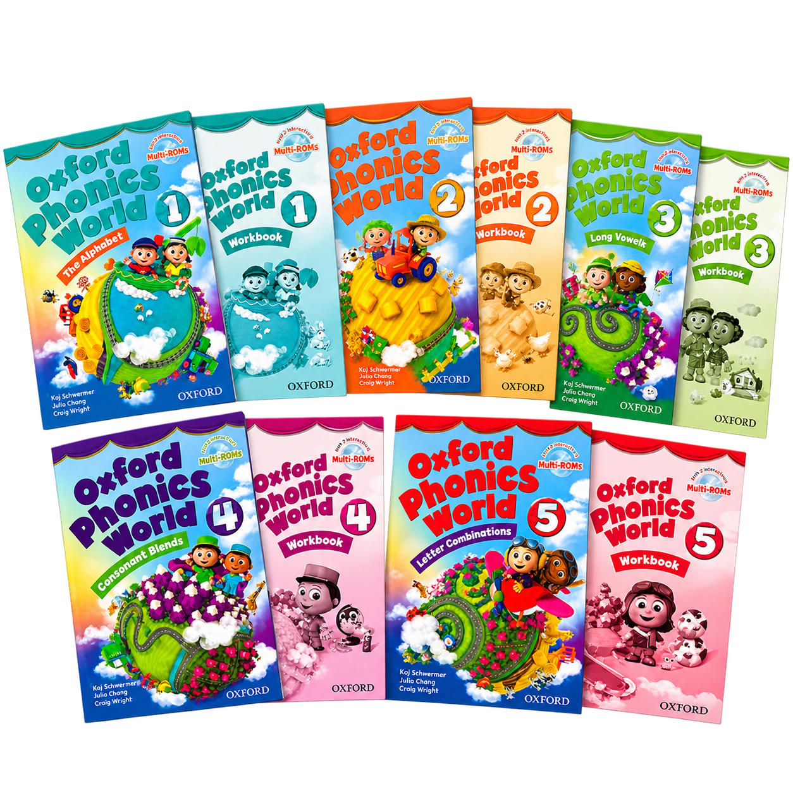
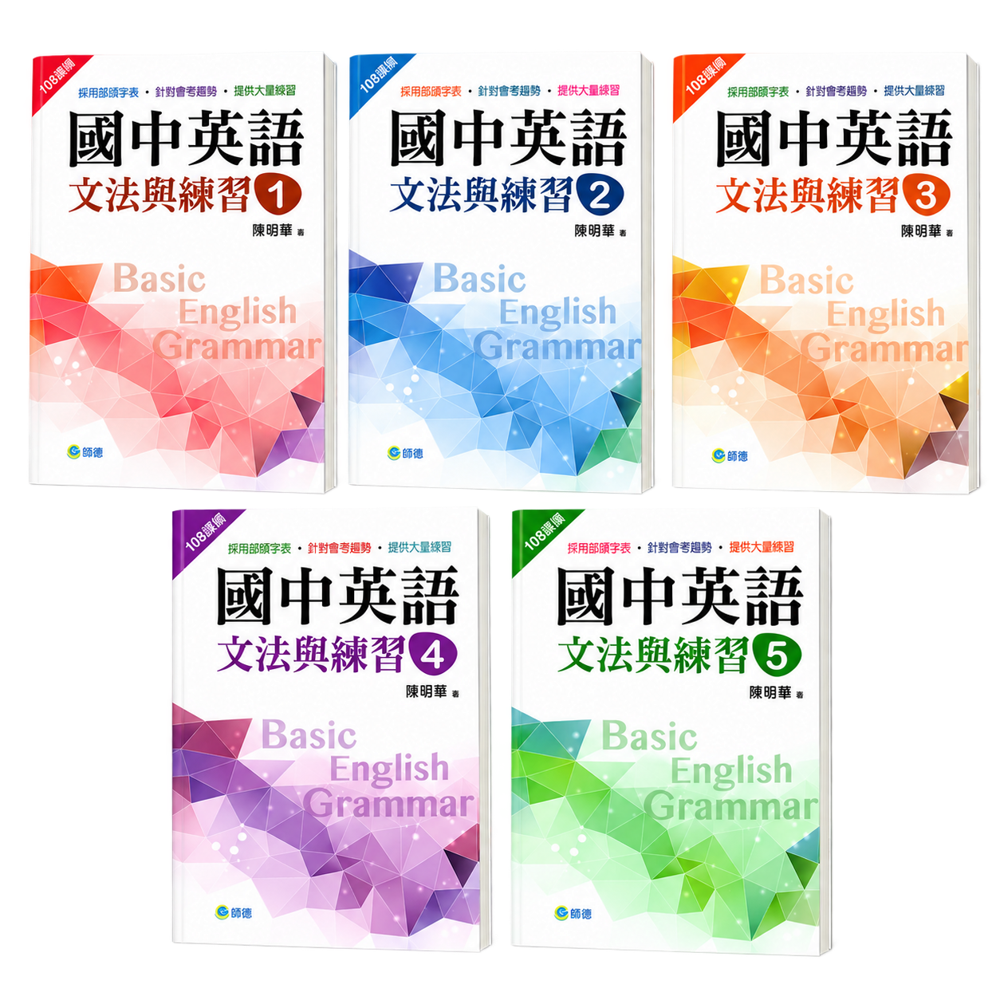
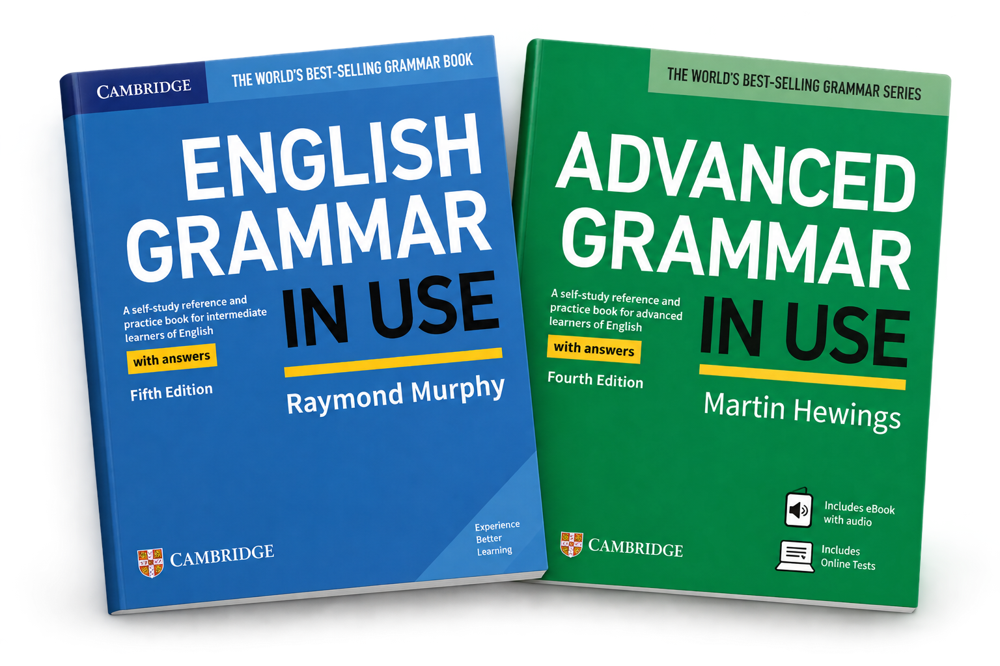
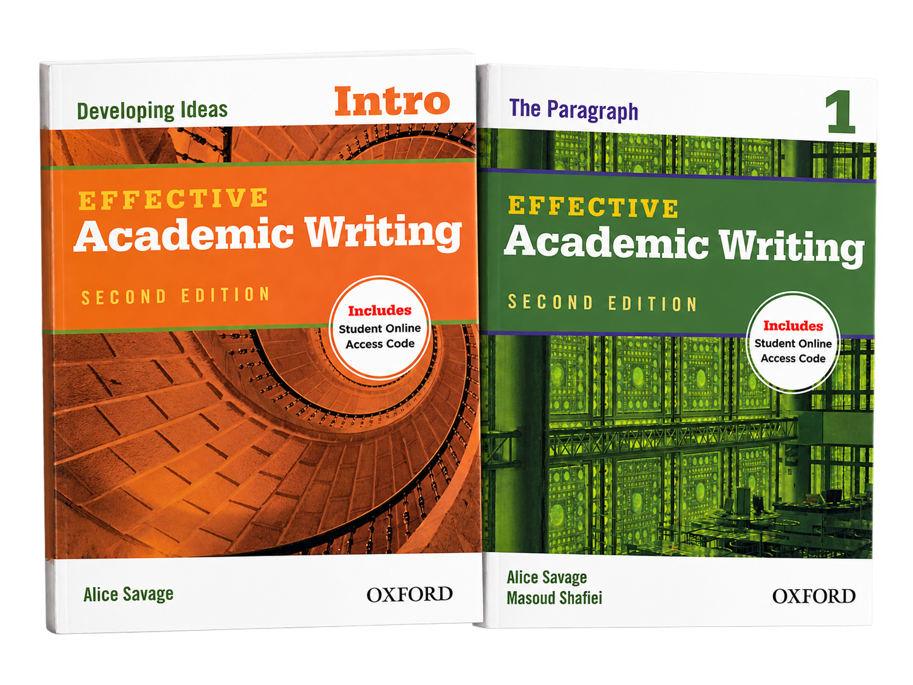
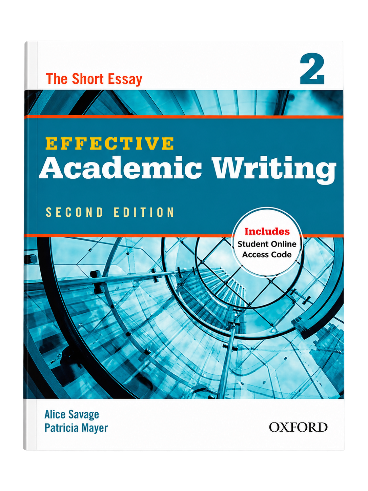
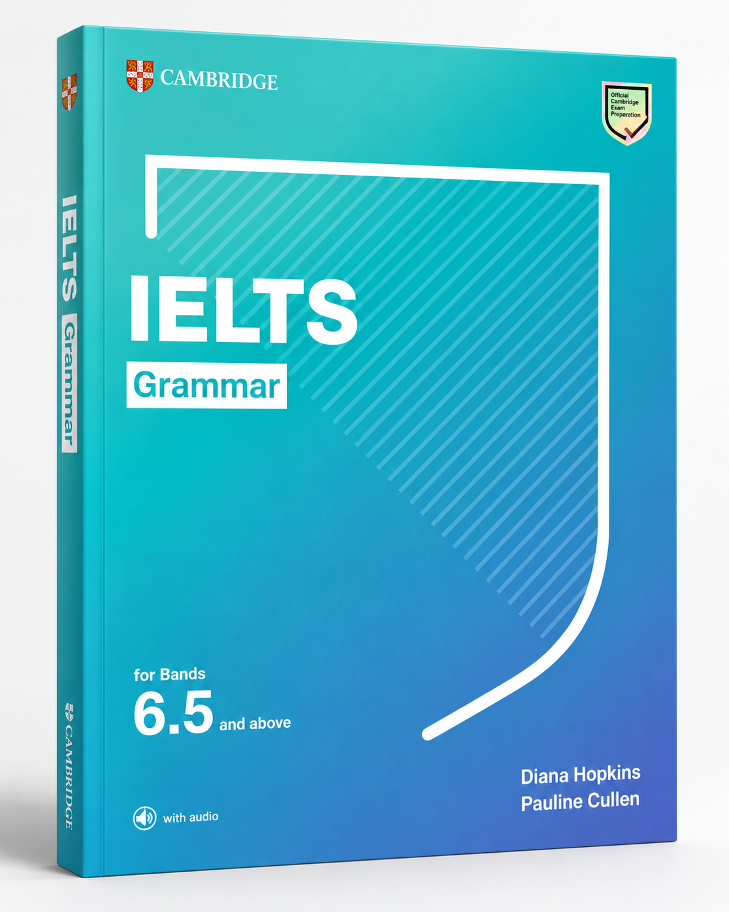
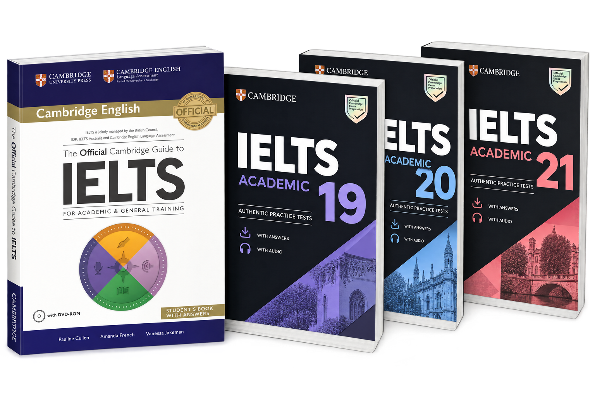
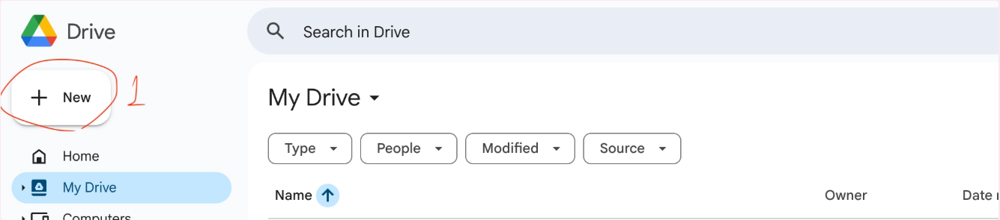
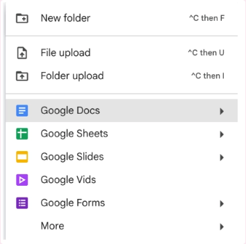
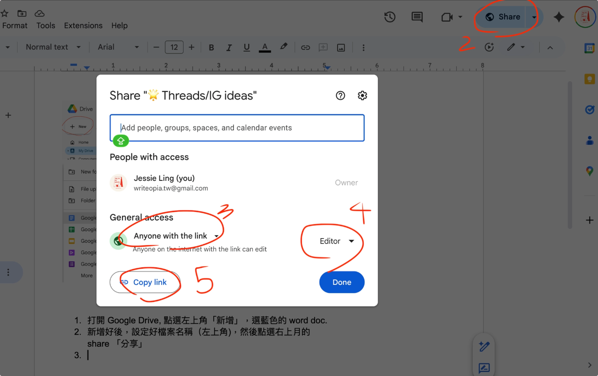

Jessie
ENGLISH · WRITING · IELTS- {{ cr.code }} {{ cr.name }}{{ cr.extra }}
已有 13 年的教學資歷，兒美、成人都有豐富經驗，也有專業證照！我相信學英文的目標，是能用另一種語言思考、表達自己。擅長的課程從發音打底、文法建構，延伸到生活英文、寫作與雅思備考，能夠依照每位學生的程度與目標調整內容。
A little space to learn, think and express yourself.
從自然發音、文法到生活英文與寫作，再到雅思四大項目，我們都能教。想和同學一起鑽研英文語用，討論邏輯表達，讓我們（痛苦？）快樂的學習，直到可以把英文說出口、寫成句！
已有 13 年的教學資歷，兒美、成人都有豐富經驗，也有專業證照！我相信學英文的目標，是能用另一種語言思考、表達自己。擅長的課程從發音打底、文法建構，延伸到生活英文、寫作與雅思備考，能夠依照每位學生的程度與目標調整內容。
以下內容皆來自學生寄來的訊息、Email 與課後回饋，為保護隱私不列出姓名。
{{ p }}
{{ n.text }}
{{ n.date }}每門課都會挑選合適的專業課本或搭配自製教材，也能依你的程度與目標做客製化調整。不確定從哪裡開始？上課前可以先私訊 WRITEopia 聊聊。
（若課程使用出版課本，書籍需自行購買。）
目前提供一對一教學與小團體教學（2–4 人）兩種上課方式。一對一課程會依照學生的英文程度、學習需求及教材難度安排教學內容，並據此調整收費，費用區間為 $800~$1,600；小團體課程則採固定收費，同一班級的學生皆適用官網公告的學費標準，費用在 $450~$600 之間。
依學生的英文程度、學習目標及使用教材安排內容，實際學費可能因個別需求調整。
實際收費會在確認學生程度與課程安排後告知。
採固定收費，同班學生學費相同；不同課程可能因教材難度及內容而有差異。
只安排英文程度相近、學習需求相符的學生同班。
目前團課開班較少，有興趣的學生可事先提出需求，我們會協助媒合程度相近的同學，並依照老師可授課的時段及報名人數確認是否開班。學生也可以自行邀請程度相近的同伴一起報名。
成功組成團課後，學費依該課程的小團體收費標準計算。
不論一對一或團班，費用固定，依官網公告。一週至少上課一堂 50 mins，可和老師討論是否需要增加週時數。
{{ c.desc }}
我們的自然發音課程依照兒童與成人不同的學習特性，採用不同的教材與教學方式，但核心目標一致：幫助學生掌握英文的基本拼讀規則，建立獨立拼讀及聽音拼寫的能力。

採用牛津大學出版社出版的 Oxford Phonics World，全套共五個級別。教材結合活潑的插圖、歌曲、故事及大量重複練習，讓孩子在輕鬆有趣的學習過程中，逐步熟悉字母與聲音的對應關係。
透過歌曲、故事、聽音辨識及互動式拼讀活動，讓孩子反覆接觸並練習學過的發音規則。老師也會安排聲音組合（Blending）、音素拆解（Segmenting）及簡單的聽音拼寫練習，幫助孩子將聽到的聲音與文字連結起來。
以趣味性與反覆練習為主，配合孩子的學習速度逐步累積拼讀能力，讓孩子在熟悉的活動中加深記憶。
使用我們自行整理、重新編排的自然發音教材，系統性整合字母發音、短母音、長母音、子音組合及常見拼讀規則，減少不必要的重複內容，幫助成人學生更有效率地理解與掌握規則。
以規則講解與實際應用為主。每學完一項拼讀規則，就會透過單字、片語到完整句子的念讀練習，讓學生立即運用所學，並透過反覆練習提升熟練度。同時搭配聽音辨識與拼寫練習，強化發音和拼字之間的連結。
著重學習效率與實用性，讓學生能將發音規則應用在不同單字及句子中。老師也會依學生的需求提供英式或美式發音示範，協助建立更準確、自然的發音習慣。
無論是兒童還是成人，我們都希望學生在完成課程並充分練習後，能夠：
兒童透過趣味活動與反覆練習建立基礎；成人則透過系統化學習與即時應用掌握規則。兩者的學習方式不同，但最終都以能夠獨立運用自然發音為目標。
課程以師德文教出版的《國中英語文法與練習》全五冊為教學架構，系統性整理台灣國中階段的重要文法觀念與句型，幫助學生循序漸進地建立扎實的文法基礎，並為後續進階英文的學習做好準備。

老師會透過觀念講解、例句分析、文法練習及中英翻譯，引導學生理解不同文法規則的使用時機與句型結構。除了課本練習，也會依照學生的理解情況補充題目與造句活動，讓學生練習將文法運用在實際表達中。
完成全套課程並充分掌握所學內容後，學生應能理解國中階段的核心英文文法，辨認常見句型結構，並運用學過的時態與文法規則，自行組織及寫出基本英文句子，為進一步的段落與文章寫作奠定基礎。
課程涵蓋的文法知識也能作為準備全民英檢初級（GEPT Elementary）的基礎，並幫助學生銜接高中英文課程。
建立基礎後，學生可以依照程度接續學習 English Grammar in Use（中級）及 Advanced Grammar in Use（進階），進一步掌握更豐富的句型結構與文法用法。
此外，也可以透過後續的英文閱讀與寫作課程，學習如何理解篇章、組織段落、連接觀點，並將文法知識實際運用在更完整的英文表達中。

適合國中以上的學生，以及希望重新打好英文基礎的成人學習者。如果你對文法觀念不夠熟悉、英文造句時經常出錯，或希望有系統地重新整理與補強文法，都很適合透過這門課程建立穩固的基礎。
使用我們自行編寫的進階發音教材 Advanced Pronunciation – Things You Need to Know，系統性整理英語自然口語中常見的發音現象，包括連音（Linking）、省音（Elision）、閃音 T（Flap T）、單字與句子重音（Stress），以及弱讀（Weak Forms）。
不同於基礎自然發音課程著重單字的拼讀規則，這門課更重視單字在實際對話中如何相互連接，以及聲音、重音與節奏如何隨著語境產生變化。
老師會透過發音示範、聽音辨識、句子朗讀及引導式模仿練習，幫助學生理解自然口語中的發音變化。
例如，美式英語中的 water 為什麼聽起來像帶有輕微的 d 音？為什麼 want to 在非正式口語中經常唸成 wanna？又為什麼相同的句子，重讀不同的單字就可能傳達不同的強調重點？
課堂上會先拆解這些發音現象，再從短語、句子逐步延伸至更完整的口語練習，透過反覆練習，讓學生逐漸熟悉自然的英文語音節奏。
希望學生能從清楚唸出個別單字，進一步掌握英文句子中的連音、弱讀與重音變化，改善逐字朗讀的習慣，讓口語表達更加流暢、清楚且自然。
同時，透過認識自然語速下的發音特徵，提升對日常英文的聽力辨識能力，減少因連音、省音或弱讀而無法辨認熟悉單字的情況。
適合已具備基本英文發音與拼讀能力，希望進一步改善口說自然度及聽力理解的學生。
如果你說英文時經常習慣一個字、一個字地唸，或是明明認識句子裡的單字，卻在聽母語者說話時難以辨認，這門課很適合幫助你理解並練習自然口語中的發音技巧。
這門課屬於我們的客製化英文課程，會依照學生的年齡、英文程度、生活習慣及實際使用英文的需求，規劃適合的學習內容。
無論是日常聊天、旅遊、職場溝通，或其他生活中經常遇到的情境，都可以成為課程的學習主題。
依照學生的學習目標，老師可能會推薦合適的英文教材，也可能自行編寫講義，搭配真實生活中的對話、文章或影音素材，讓課程內容更貼近學生的需求，而不受限於單一課本。
以實際溝通與情境應用為主，透過對話練習、角色扮演及引導式問答，幫助學生熟悉日常生活中常用的單字、片語與自然口語表達。
老師也會依照學生的程度提供適當的文法、發音及用字指導，讓學生知道英文怎麼說，也知道在什麼情境下使用。
我們希望學生能將英文逐漸融入自己的生活。
透過學習與自身生活相關的內容，逐步累積實用的英文表達，讓學生在需要使用英文時，能更自然、有自信地開口溝通。
適合希望提升日常英文溝通能力，或有特定生活、旅遊及工作需求的學習者。無論是想加強口說、學習更自然的英文表達，或希望課程能更貼近自己的興趣與生活，都可以依個人需求安排學習內容。
課程採用牛津大學出版社出版的 Effective Academic Writing, Second Edition，以 Intro（Developing Ideas）及 Level 1（The Paragraph）兩冊為主要教材。
從基礎英文句子的組織與想法發展開始，逐步學習如何撰寫結構完整、內容清楚且具有連貫性的英文段落，幫助學生建立系統性的寫作能力。

老師會帶領學生學習英文寫作的完整流程，包括發想與整理觀點（Brainstorming）、擬定大綱（Outlining）、撰寫初稿（Drafting）、修改內容（Revising）及校對文字（Editing）。
除了句型與文法練習，也會著重主題句（Topic Sentence）、支持句（Supporting Sentences）、結論句（Concluding Sentence），以及段落的統一性（Unity）與連貫性（Coherence）。
課堂上會透過範文分析、引導式寫作及個別回饋，幫助學生逐步改善句子結構、用字與內容組織。
完成課程並充分掌握所學內容後，希望學生能從單句寫作進步到獨立完成具有清楚主旨、充分支持細節及合理組織的英文段落。
除了提高文法與用字的準確度，也希望學生能學會如何發展想法、安排內容，並透過修改讓自己的文字更清楚、更有條理，為後續的短篇文章、學術寫作及雅思寫作奠定基礎。
建立段落寫作能力後，可以接續學習 Effective Academic Writing 2: The Short Essay，進一步掌握多段落文章的架構、段落之間的銜接，以及論點的組織與發展。
適合已具備基本英文文法與造句能力，但還不熟悉英文寫作架構的學生。
如果你經常不知道如何開始寫作、容易將中文逐字翻譯成英文，或是能寫出單句，卻不知道如何將想法組織成完整段落，這門課很適合作為英文寫作的起點。
課程使用牛津大學出版社出版的 Effective Academic Writing 2: The Short Essay（Second Edition），延續寫作 1 的段落寫作基礎，進一步學習如何將不同觀點與支持細節組織成結構完整、邏輯清楚的多段落英文文章。
教材涵蓋描述文（Descriptive Essays）、敘事文（Narrative Essays）、比較對照文（Comparison-Contrast Essays）、觀點文（Opinion Essays）及因果文（Cause-and-Effect Essays），幫助學生熟悉不同寫作目的所需要的文章架構與表達方式。

老師會透過範文分析、觀點發想、大綱規劃及引導式寫作，帶領學生學習文章的完整架構，包括引言（Introduction）、主旨論點（Thesis Statement）、主體段落（Body Paragraphs）與結論（Conclusion）。
除了練習發展論點與支持細節，也會著重段落之間的邏輯關係、銜接方式及學術寫作常用的字彙與句型。
完成初稿後，老師會針對內容組織、文法、用字及文章連貫性提供回饋，引導學生修改作品，逐步提升寫作的準確度與表達品質。
完成課程並充分掌握所學內容後，希望學生能獨立規劃並撰寫結構清楚的多段落英文短文，理解不同文章類型的寫作要求，並有條理地發展觀點、安排內容及運用支持細節。
透過反覆的寫作與修改練習，逐步提升文章的組織能力、邏輯性及語言準確度，為未來的進階學術寫作、雅思寫作及其他英文寫作需求奠定基礎。
建立短篇文章寫作能力後，可以依照學習目標，進一步學習更深入的論證技巧、學術資料運用及長篇文章寫作。
如果未來希望準備 IELTS Writing，也可以接續雅思寫作專項課程，進一步熟悉 Task 1、Task 2 的題型要求、評分標準及限時寫作策略。
適合已具備基本英文文法與段落寫作能力，希望進一步提升文章組織與論點發展能力的學生。
如果你已經能寫出完整段落，但面對較長的英文作文時，經常不知道如何安排架構、延伸想法，或讓不同段落自然銜接，這門課很適合幫助你從段落寫作進階到完整的短篇文章寫作。
課程選用希伯崙股份有限公司出版的《英語閱讀素養：歐美文學名著選》、《中學生必備英語閱讀素養：經典故事篇》、《世界文化篇》及《培養英語閱讀素養：看經典故事學英語》等教材。
內容涵蓋經典文學、童話故事、世界文化及不同主題的閱讀文章。老師會依照學生的英文程度、閱讀能力與興趣選擇合適的篇章，讓學生透過多元的閱讀素材累積字彙、熟悉英文句型，並拓展對不同文化與議題的認識。
除了閱讀文章與回答問題，老師也會帶領學生分析句子結構、整理實用單字與片語，並練習掌握文章主旨、尋找關鍵資訊，以及運用上下文推測字義。
除了基本的閱讀理解，我們也特別重視文章分析與批判性思考。老師會透過引導式提問與討論，帶領學生探索作者的寫作意圖、分析故事人物的動機、根據文章線索進行合理推論，並學習區分事實與觀點。
針對文化與文學類文章，也會安排不同文化背景、價值觀及故事主題的比較，鼓勵學生從不同角度理解文本，並練習提出自己的看法與支持理由。
我們希望學生能逐步建立獨立閱讀、理解、分析與評估資訊的能力。
透過持續的閱讀及討論練習，學生將學習如何找出文章重點、理解作者想傳達的訊息、辨識不同觀點，並根據文本內容提出有依據的判斷。
同時累積英文詞彙、常見搭配與句型知識，提升閱讀理解及表達能力，為未來的進階閱讀、英文寫作與學術學習奠定基礎。
適合已具備基本英文文法與閱讀能力，希望進一步提升閱讀理解、字彙量及文章分析能力的學生。
如果你經常覺得英文文章太長、不知道哪些資訊重要，或是認識大部分單字，卻仍然無法掌握文章意思，又或者希望自己在閱讀時能有更深入的理解與思考，這門課都很適合。
課程不限於國中生，高中生及成人學習者也可以依照實際程度與興趣安排閱讀內容。
課程使用劍橋大學出版社出版的 IELTS Grammar for Bands 6.5 and above，這是一本針對中高級英語學習者、以雅思 6.5 分以上為目標的文法教材。
教材共 25 個單元，涵蓋雅思備考所需的重要文法觀念，並結合聽力、閱讀及寫作等雅思考試題型，讓學生學習如何在實際考試情境中運用文法。
雖然教材定位偏向中高級程度，但我們也會依照學生的實際能力調整教學內容。對於文法基礎尚未穩固的學生，老師會先補充必要的基礎觀念，再逐步帶入進階文法與雅思題型，讓學生能循序漸進地學習。

老師會根據學生的文法程度與常見錯誤安排教學，透過觀念講解、例句分析、文法練習及雅思模擬題型，幫助學生理解不同規則的使用時機。
除了教材練習，也會針對雅思口說與寫作中常見的文法問題進行補充，例如時態運用、複雜句型、從屬子句及句子結構等，讓學生練習將文法知識應用在實際表達中。
希望學生能釐清容易混淆的文法觀念，減少常見錯誤，並逐步提升文法使用的準確度與句型多樣性。
同時，透過接觸雅思相關題型，熟悉文法在不同考試情境中的實際應用，為後續的雅思口說、寫作及其他專項訓練奠定更穩固的語言基礎。
適合已具備基本英文能力、正在準備雅思考試，但文法觀念仍不夠穩固的學生。
如果你經常在口說或寫作時出現文法錯誤、不確定不同句型的使用時機，或希望在正式進入雅思專項訓練前，先有系統地整理與補強文法，這門課會很適合。
由於教材本身偏向中高級程度，課程並非針對完全零基礎的學習者設計。老師會依照學生的程度評估需要補強的內容，讓學生在適合自己的起點上逐步提升文法能力。
課程會依照學生的英文程度與備考需求，選用劍橋官方雅思備考教材或歷屆官方真題，並搭配自編講義與補充學習資源，幫助學生熟悉考試題型，有系統地提升聽力與閱讀能力。

除了理解錄音內容，我們也會帶領學生分析題目與音檔之間的關係，學習如何掌握關鍵資訊、辨識語意變化，並熟悉雅思聽力的作答方式。
課堂重點包括：除了理解文章內容，也會訓練學生如何有效定位資訊、分析句子結構，並根據文本內容判斷答案，逐步建立適合自己的閱讀與時間分配策略。
課堂重點包括：完成題目、核對答案之後，我們會花更多時間檢視解題過程中的理解與判斷。
老師會帶領學生找出正確答案的依據，分析錯誤選項為什麼不符合題意，並根據學生的錯題情況補充相關字彙、句型或背景知識。
透過反覆練習與檢討，幫助學生辨識自己的問題究竟來自字彙不足、句子理解困難、資訊判斷錯誤，還是不熟悉題型，讓後續複習更有方向。
除了熟悉雅思題型與應試策略，我們也希望學生逐步提升對自然口語及較長篇英文文章的理解能力。
透過有系統的聽讀訓練，培養擷取資訊、理解語意、分析文本與做出有依據判斷的能力，並學習如何將這些技巧運用在實際考試中。
考試是檢視語言能力的其中一種方式。我們希望學生在準備雅思的同時，也提升英文聽力與閱讀實力。
適合已具備一定英文基礎，希望開始準備雅思聽力與閱讀的學生。
由於課程會直接使用雅思考題進行訓練，建議學生具備約 CEFR B1 或以上的英文能力。若目前在字彙、文法或基本聽讀理解方面仍有明顯困難，老師會依照實際程度，建議先補強必要的基礎能力，再逐步進入雅思專項練習。
課程使用老師自行整理的雅思口說講義，內容涵蓋 IELTS Speaking Part 1–3 的考試技巧、歷年口說題庫、常見話題，以及實用字彙與口語表達。
老師會依照學生的英文程度、目標分數及口說弱點安排練習，幫助學生熟悉不同題型的作答方式，建立適合自己的回答策略。
課程以考試技巧講解與實際口說演練為主，老師會帶領學生熟悉雅思口說的四項評分標準：流暢度與連貫性（Fluency and Coherence）、詞彙運用（Lexical Resource）、文法多樣性與準確度（Grammatical Range and Accuracy），以及發音（Pronunciation）。
針對 Part 1–3 不同的題型與作答要求，老師會示範如何發展想法、延伸回答、組織內容，並運用自然且符合情境的英文表達。
課堂上會直接進行口說練習與模擬問答，老師則根據學生的實際表現提供回饋，指出需要改善的文法、用字、發音及回答結構，讓學生逐步提升口說能力。
每堂課後，老師會整理相關主題的重要字彙、常見搭配（Collocations）及自然口語表達，並依照學生的學習情況安排複習與口說作業。
透過課後錄音、回答練習及重點複習，幫助學生將課堂上學到的表達方式逐漸內化，在課堂外也能運用。
我們不鼓勵學生死背制式答案。我們希望學生理解題目，學會組織想法，並自然地表達自己的觀點。
除了熟悉考試題型與評分標準，課程也重視臨場反應與應試心態的建立。透過反覆模擬與即時回饋，讓學生練習在有限的準備時間內整理思路，並在遇到不熟悉的題目時，仍能有條理地延伸回答。
希望學生面對不同話題時，都能靈活運用英文溝通。
適合已具備基本英文溝通能力，希望準備雅思口說考試，或進一步提升回答流暢度、內容組織及語言準確度的學生。
如果你經常不知道如何延伸回答、容易在考試時緊張或突然想不到英文，或是明明準備過題目，實際開口時卻無法自然表達，這門課都能針對你的弱點安排練習。
課程使用老師自行整理的雅思寫作講義，涵蓋 IELTS Writing Task 1 與 Task 2 的常見題型、寫作架構、答題策略及實用的學術英文表達。
老師會依照學生的英文程度、目標分數及寫作弱點，安排合適的練習內容，並提供額外的範文分析、字彙整理與補充教材，讓學生有系統地建立雅思寫作能力。
課程會從理解題目要求開始，帶領學生掌握不同題型的寫作方法，學習如何規劃文章架構、發想與發展觀點（Idea Generation & Development），並將想法組織成清楚、有邏輯的英文文章。
針對學術組的圖表、流程圖及地圖等題型，練習辨識主要特徵、比較重要資訊，以及使用準確、客觀的語言描述資料。
針對不同作文題型，學習如何分析題意、建立立場、發展論點及安排支持理由與例子，讓文章結構完整，並充分回應題目要求。
老師也會依照雅思寫作的四項評分標準，針對內容回應、文章組織、字彙運用及文法準確度提供指導，幫助學生了解自己的寫作問題與改善方向。
老師會根據學生的學習情況安排寫作作業，並針對常見問題提供個別回饋與補充練習。
除了訂正文法與用字錯誤，也會引導學生重新檢視文章的論點發展、段落安排與邏輯銜接，透過修改與重寫練習，逐步提升寫作品質。
我們希望學生理解不同題型的寫作要求，學會獨立分析題目、組織想法，並運用適當的語言清楚表達，不依賴固定的作文模板。
透過有系統的練習與回饋，逐步提升文章的切題程度、連貫性、字彙運用及文法準確度，同時建立限時寫作與自我修改的能力。
我們希望學生逐漸掌握一套能靈活運用在不同題目上的寫作方法。
適合已具備基本英文文法與寫作能力，希望準備雅思寫作考試，或進一步提升文章組織、論點發展及語言表達能力的學生。
如果你經常不知道如何開始寫作、難以發展想法，或是能寫出英文句子，卻無法將內容組織成完整且有說服力的文章，這門課可以針對你的問題安排練習。
對於文法或基本段落寫作能力尚未穩固的學生，老師也會依照實際程度，建議先補強必要的寫作基礎，再進入雅思專項訓練。
想準備面試、出國、工作簡報，或只想補強某一塊？依照你的目標、程度與時間，從上面的課程中重新組合內容，挑選合適的專業課本或使用老師的自製教材，安排專屬於你的學習路線。
上課前花五分鐘確認一下，我們就能把上課時間留給練習。全部勾完，就可以準備上課囉！
{{ prepDone }} / {{ prepTotal }} READY
（我們沒有馬上回覆代表有人生雜事和教學、備課要處理，也有可能是被系統吃掉，同學可稍加等待或是來信提醒 writeopia.tw@gmail.com）
看完課程還不確定哪一堂適合自己？預約試課，老師會依照你的程度與目標，給你最合適的學習建議。
挑幾份需要的教材帶回家吧！免費教材可直接下載；付費教材透過 Portaly 安全付款，付款後自動寄送檔案。也有可以直接在線上做的練習哦！
{{ mg.emptyText }}
網頁式的線上複習，打開就能練，不用下載或登入。答錯的題目會記在你的瀏覽器裡，下次回來可以直接重練。
不確定哪堂課適合自己？先來上一堂試課吧！選一個目前有開放的時段，告訴我們你想加強的方向，例如 IELTS 口說、文法、發音或生活英文，老師會依照你的目標事先準備課程內容。為了準備教材，請至少在上課三天前預約。目前試課費用為 $500/50 mins，我們會聯繫同學繳費，以完成預約流程。
找不到合適的時間？歡迎透過 官方 LINE 告訴我們，一起找個適合的時間。
Hi guys, welcome to our little world of words and ideas!
WRITEopia 這個名字，靈感來自 Utopia、Zootopia 這類帶有奇幻國度想像的名字。我們希望創造一個屬於文字、想法和學習的小小世界，讓不同的觀點在這裡自由碰撞，也讓每個人都能找到屬於自己的表達方式。
因為我們相信，寫作是一件很有魅力的事。
一本讓人捨不得闔上的書、一段令人印象深刻的故事，或是一句恰好說中心聲的文字，都讓我們感受到語言的力量。
但欣賞文字的美好，和自己動筆寫作，往往是兩回事。
或許你也曾有過這樣的經驗：腦中明明有許多想法，真正要寫下來時，卻不知道從哪裡開始；好不容易寫出一段話，回頭讀一遍，又覺得好像哪裡不太對勁。
其實，寫作不一定要用多麼華麗的詞藻，或寫出多麼複雜的句子。有時候，只是換個詞、調整句子的順序，甚至補上一個簡單的解釋，就能讓原本模糊的想法變得清晰，也讓整段話產生截然不同的效果。
而這種透過文字反覆琢磨、逐漸找到合適表達方式的過程，正是寫作迷人的地方。
在 WRITEopia，我們希望寫作在考試之外，是學習語言、整理思緒與表達自我的一種方式。
寫作讓我們有機會重新檢視自己的觀點，思考如何讓別人理解我們想說的話。我們可以透過文字記錄生活、分享感受，與他人產生共鳴，甚至改變一個人的想法。
閱讀和口說也是如此。
當我們閱讀時，試著理解文字背後的觀點；當我們開口說話時，練習把想法說得清楚、有條理。閱讀、思考、口說與寫作，其實都在幫助我們更好地理解世界，也讓世界更了解自己。
當然，這些能力不會因為上了一堂課、聽完一場演講，就突然出現。它們需要時間，也需要一次又一次的嘗試、修改與累積。
“就像一塊尚未打磨的石頭，需要經過反覆琢磨，才能逐漸展現自己的光澤。
我們希望 WRITEopia 能成為這樣一個地方：一起探索語言的可能，練習獨立思考、自在表達，並在過程中慢慢找到屬於自己的聲音與光彩。
雅思、全民英檢題目，或是一篇時事、一則故事，讀完就動筆寫寫看。有上課的同學可以和老師討論做哪一項作業，請老師批改哦！
{{ blogEmptyText }}
{{ post.excerpt }}
留言功能測試中：目前留言只會保存在你自己的瀏覽器，其他人暫時看不到。
{{ c.text }}
{{ r.text }}
還沒有留言，成為第一個分享想法的人吧。
目前業務以家教為主，Courses 頁面列出的課程都是 WRITEopia 的專長。目前團課不固定時間釋出，皆以 Threads 的最新消息為準，可直接在 Booking 頁預約試課（$500），或聯繫老師安排，若同學有興趣，便在與老師討論雙方同意後，完成學費預繳和行程排定確認（需提供 Gmail 帳號）。
課程費用依報名當年度最新學費為準，可看最新公告或與老師確認。
我們 1-on-1 聽說讀寫可以全方位教學，為了最有效率幫同學備考，我會希望同學提供目前英文程度和想要考到的目標分數，並在試課（$500）之後和同學討論如何針對弱點進行課程安排，並客製化學習建議。
確定要上課的話以一期至少四堂來安排，一堂是50分鐘，雅思課程不論一對一或團班皆為固定收費（每堂 50 分鐘）：
| 課程 | 1 對 1 | 團班 |
|---|---|---|
| 雅思文法 | $1000 | $650 |
| 雅思聽讀（IELTS Official Training） | $1000 | $550 |
| 雅思聽讀（真題＋老師自編資源） | $1100 | $650 |
| 雅思口說 | $1100 | $650 |
| 雅思寫作 | $1200 | $700 |
如果需要約長期，12堂課以上打9折。
選擇我們的好處就是配合同學的需求，在課堂上盡力不浪費時間，同學可以努力的部分，我們不隱瞞，需要我們協助的，我們不省力，高效備考。
課堂上，聽讀方面我們使用雅思官方出的備考題目，寫作與口說是老師準備題目和範文針對考點進行教學、示範，全部項目都會安排作業，學生會很清楚自己的準備路徑：已經完成了多少，還需要努力多少。
團課的話，要看當月是否有課，費用的確是更加親民，但彈性少一些，課程安排是固定的，一樣使用官方課本，適合預算低一些，傾向按部就班，想花時間全面、徹底準備的同學；一樣透過試課、諮詢後為您安排合適的進度。
如果有作業簿，學生於課後查看自己的作業簿即可。如果上課有使用 ppt，會在課後整理成 pdf 傳給同學做留存。如有需要課後影片複習，可另外提出。
學生們主要分「短期課程（一個月4堂課）」和「相對長期課程（一個月 12 堂或是3個月 12 堂以上）」。
(1) 短期課程有一次臨時請假的機會，請盡量在當月完成補課
(2) 長期課程，每 12 堂有兩次以內的臨時請假的機會，可在期數最後一堂課往後延兩週的時間內補完課。但請知悉補課的時間需要是老師有上班或無其他學生的時間，會有無法補課的風險，最好是能都跟老師確認過，了解有無補課可能。（目前是還沒有碰到補不完課程的，如果有需要老師諒解的困難，亦可提提看）


